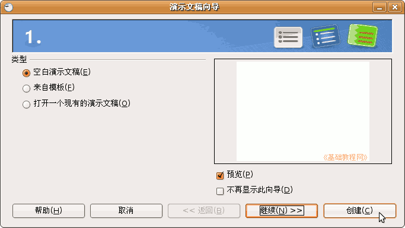
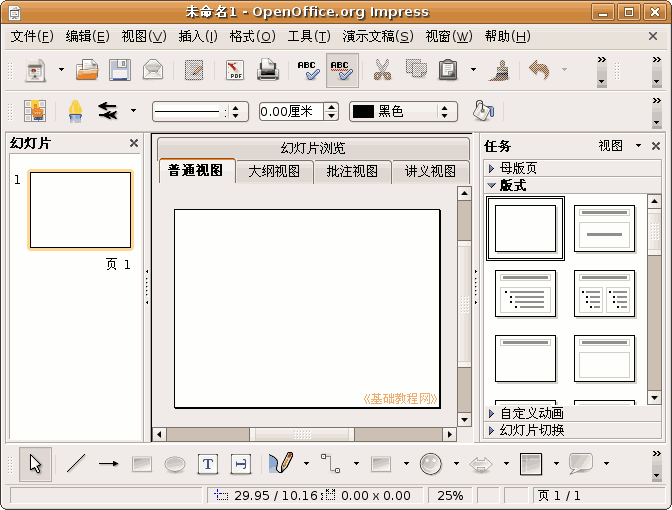
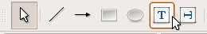

OpenOffice.org 教程之 Impress 演示文稿
作者：TeliuTe 来源：基础教程网
认识窗口 返回目录 下一课Impress 是一个制作演示文稿的应用程序，使用它可以很方便地创建自己的演示文稿；
1、启动Impress
1）点菜单“应用程序－办公－OpenOffice.org 演示”，就可以打开一个演示文稿向导；

2）直接点“创建”按钮，创建一个空白演示文稿，进入到IMpress窗口；

3）窗口分成三栏，中间宽大的是工作区，左边是幻灯片的序号，右边是任务属性窗格，幻灯片主要在中间的工作区中进行；
2、插入文本框
1）在窗口下边“绘图”工具栏中，找到两个T的按钮，点击选中第一个T，鼠标指针变成一个十字形；

2）在工作区中拖动鼠标，画一个方框，松开鼠标，这时出现一个文本框，光标插入点在里头一闪一闪；
3）选一个汉字输入法，输入“美丽的校园”;
4）拖动文本框的边框到中间位置，然后在空白处点一下鼠标左键，取消文本框的选择，边框消失；
3、 放映幻灯片
1）点菜单“演示文稿－幻灯片放映”命令，可以看到在白色的幻灯片当中，有一行文字“美丽的校 园”
点菜单“演示文稿－幻灯片放映设置..”，可以设置从哪一页开始放映；
2）接着在空白处点一下鼠标左键，出来一个黑色屏幕，上面写着“请单击鼠标左键，退出放映...”，
再点一下左键退出放映，回 到工作区中；
点菜单“文件－保存”命令，以“美丽”为文件名，保存文件到自己的文件夹；
本节学习了Impress窗口和插入文本框基本操作，如果你成功地完成了练习，请继续学习下一课内容；
本教程由86团学校TeliuTe制作|著作权所有
基础教程网：http://teliute.org
美丽的校园……
转载和引用本站内容，请保留版权信息和本站链接。